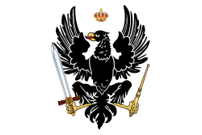

| 1525-1701 | 1701-1871 | 1871-1918 | 1918-1947 | ||||
|---|---|---|---|---|---|---|---|
| Feudal Prussia | Kingdom of Prussia | German Empire | Free State of Prussia | ||||
| Albrecht of Prussia (1525–1568) | Frederick William, the "Great Elector" (1640–1688) | Frederick I (1688–1701) | Frederick William I (1713–1740) | Frederick II, "Frederick the Great" (1740–1786) | William I (1861–1871 as King of Prussia, and 1871–1888 as German Emperor) | Wilhelm II (1888-1918) | Hermann Göring (1933-1945) |
The History of Prussia

The Start of Prussia
Prussia started as a German state in 1525 and was ruled by the House of Hohenzollern until it became the Kingdom of Prussia in 1701. While the kingdom was powerful since its creation, it really started to gain power in the 18th century under Frederick the Great
The End of Prussia?
In 1871 Prussia united the other 25 states of Germany under the German Empire, yet Prussia did not relinquish any power. The Emperor of the German Empire was also the King of Prussia, and that was true until the end of the German Empire in 1918 after WWI. Prussia continued to exists until officially 1947 when the Allies made a decree to dissolve it, but was unofficially dissolved in 1932 when the German Chancellor transferred the powers of the Prussian government to himself